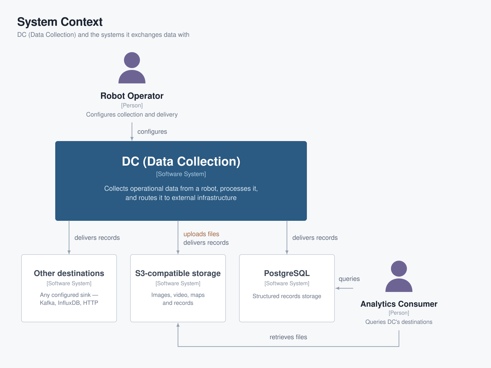
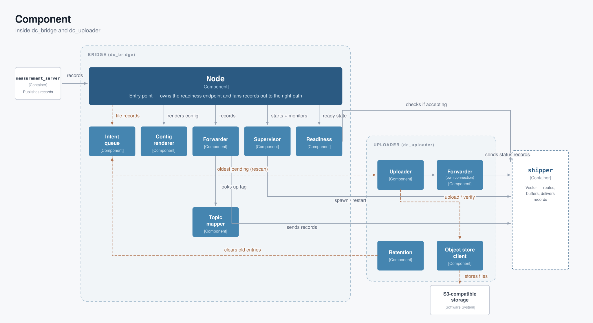

Data Pipeline
This page follows one piece of data from the sensor that produced it to the external system that stores it. The vocabulary — Measurement, Record, Group, File, Bridge, Shipper, Destination, Tag — is defined in Concepts and used consistently throughout.
C4 model
Three levels, each zooming further into the pipeline: DC as a single system among external actors and destinations (Context), the processes that make it up (Container), and the pieces inside the Bridge (Component). The flowchart in the next section stays as the at-a-glance narrative view of a single Record's journey; these diagrams complement it rather than replace it.
DC and the systems it exchanges data with (C1)
DC runs as one system on the robot. A robot operator configures it; analytics and dashboard consumers read from whatever Destinations it was configured to write to — PostgreSQL, S3-compatible object storage, and (via passthrough, ADR-0003) any other Shipper-supported sink.

Inside DC (C2)
Inside DC, measurement_server is the node lifecycle-managed by
dc_lifecycle_manager (see Lifecycle Manager for the
managed-node list and why it's just the one node today). group_server runs as a plain
node alongside it, not under lifecycle management. The Bridge (dc_bridge) and its
supervised Shipper child are deliberately outside that boundary too
(ADR-0006) — the
Bridge has no meaningful deactivated state, so its readiness comes from launch ordering
(bridge_ready_gate) instead of a lifecycle transition. See
Deterministic startup ordering for the sequence this
diagram's bridge_ready_gate → dc_lifecycle_manager relationship summarizes.
dc_uploader is a fourth, independent process dc_bringup.launch.py starts
alongside the rest of the pipeline when a receives: files Destination is configured
(ADR-0014) — it uploads Files and
reports their status directly to the Shipper over its own connection, so an Uploader
crash or restart never touches Record collection.

Inside dc_bridge and dc_uploader (C3)
The pieces added across #244–#267, now invisible from the outside: BridgeNode wires a
Forwarder (Records → Shipper), a Supervisor (owns the Vector child process), a Config
renderer (ADR-0003's
shipper/destinations params → Vector TOML, including passthrough snippet
validation), Readiness (backs ~/ready), and — for receives: files Destinations
(ADR-0005) — a durable
on-disk IntentQueue it enqueues into and forgets.
That queue is where the Bridge's responsibility for a File ends. dc_uploader
(ADR-0014) is a separate process —
its own executable, no rclcpp/rclpy dependency — that rescans the same on-disk
queue, uploads Files against an S3-compatible ObjectStore, and reports status Records
over its own Forwarder/Shipper connection under the dc.files Tag, entirely
independent of the Bridge's own Forwarder. Killing or restarting dc_uploader never
touches Record collection, since there is no shared address space left for it to take
down.

The path of a Record
flowchart LR
subgraph ros["ROS 2 graph"]
meas["Measurement plugins<br/>(measurement_server)"]
cond["Conditions"]
group["Group node<br/>(group_server)"]
end
subgraph bridge["Bridge (dc_bridge)"]
fwd["Forwarder"]
iq[("Intent queue<br/>(disk)")]
end
subgraph uploader["dc_uploader (own process)"]
upl["Uploader"]
ufwd["Forwarder<br/>(own connection)"]
end
subgraph shipper["Shipper (Vector)"]
route["dc.<tag> routes"]
buf[("Disk buffer")]
end
subgraph dest["Destinations"]
pg["PostgreSQL"]
s3["S3-compatible storage"]
other["Any Vector sink<br/>(passthrough)"]
end
cond -- gate --> meas
meas -- "Records (StringStamped)" --> fwd
meas -- "Records" --> group
group -- "merged Records" --> fwd
meas -. "Files on disk" .-> fwd
fwd -. "enqueues intent" .-> iq
iq -. "rescans (poll)" .-> upl
fwd -- "shipper ingest protocol" --> route
route --> buf
buf --> pg
buf --> other
upl -- "File bytes" --> s3
upl -- "status Record" --> ufwd
ufwd -- "dc.files, its own connection" --> route
- A Measurement produces a Record. Each Measurement plugin samples its source on a
timer (or on an input topic) and publishes one timestamped JSON document as a
dc_interfaces/msg/StringStampedon itstopic_output. Conditions can gate whether the Measurement collects at all. - Optionally, a Group merges Records. The Group node subscribes to several
Measurement topics and publishes one merged Record on
/dc/group/<name>once their timestamps line up (sync_delay). - The Bridge forwards every Record.
dc_bridgesubscribes to every topic listed in any Destination'sinputs, derives that topic's Tag, and hands the Record to the Shipper over the local shipper ingest socket (default127.0.0.1:24224), with receipt acknowledgement. - The Shipper routes, buffers and delivers. Vector normalizes the Record's
timestamp field, exposes it on the public
dc.<tag>route, writes it to a persistent disk buffer, and delivers it to each Destination wired to that route — retrying with its own backoff until it succeeds. - Files take a different path. A File (camera image, map, video) is never sent
through the Shipper.
dc_bridgeparses thelocal_paths/remote_pathsreferences embedded in the Record and durably enqueues an intent to a shared on-disk queue — then forgets it.dc_uploader, a separate process (ADR-0014), rescans that same queue, uploads the bytes to object storage, verifies them, and emits a status Record under thedc.filesTag over its own Shipper connection — which then travels the ordinary Record path. See File uploads.
Where each piece is configured
| Stage | Node | Parameters |
|---|---|---|
| Producing Records | measurement_server | Measurements |
| Gating collection | measurement_server | Conditions |
| Merging Records | group_server | Groups |
| Routing, buffering, delivering | dc_bridge | Destinations |
| Uploading Files, reporting status | dc_uploader | File uploads |
Routing is decided in exactly one place: a Destination's inputs list names the topics
it receives. Nothing on the producing side selects a Destination.
Deterministic startup ordering
dc_bringup.launch.py brings the pipeline up in a fixed order
(ADR-0006), so no Record
can be emitted before the pipeline is able to accept it:
- Bridge first.
dc_bridgestarts as a plain node (outside the lifecycle manager) and spawns the Vector Shipper as a supervised child process.dc_uploaderstarts alongside it at this same step, as its own process, unless therun_uploaderlaunch argument isFalse(ADR-0014) — it isn't gated by readiness the way the collection nodes are, since it has nothing to wait for beyond the on-disk intent queue it rescans. The measurement server also starts here, but stays unconfigured and inactive — its publishers cannot emit anything yet. - Readiness gate. A
bridge_ready_gateprocess blocks, polling the Bridge's~/readyservice (std_srvs/Trigger), which answerssuccess=Trueonly once the Shipper is accepting connections on its ingest socket. The gate'sservice,timeout_s(default 120 s), andpoll_interval_sparameters are configurable from the params file underbridge_ready_gate:. - Activation. Only when the gate exits successfully does the launch start
lifecycle_manager_dc, which configures and then activates the collection nodes. If the Bridge never becomes ready before the gate's deadline, the whole launch shuts down loudly instead of leaving a half-started pipeline running.
See Lifecycle Manager for the diagrammed version of this sequence, plus the state transitions and bond-heartbeat recovery behavior it drives once activated.
Durability and supervision
- Disk buffering. The Shipper owns a persistent disk buffer at
shipper.data_dir. A Record the Bridge has handed over survives a Destination outage, a Bridge restart, and a robot reboot; delivery resumes — with end-to-end acknowledgements — once the Destination is reachable again. - Backpressure. When a Destination is slow, the Shipper stops acknowledging, and the Bridge propagates that backwards rather than dropping data silently.
- Supervision. The launch file respawns
dc_bridgeunconditionally (independent ofuse_respawn), and the Bridge supervises its Shipper child — including a Linux parent-death signal, so the Shipper can never outlive the Bridge even across a SIGKILL or crash. - The one lossy window. Records published while the Bridge is down are dropped: ROS topics are fire-and-forget and nothing buffers upstream of the Bridge. Delivery resumes as soon as the respawned Bridge is ready.
- Delivery semantics. At-least-once. After a crash or an induced outage, a boundary Record may be re-sent; deduplicate on read if that matters to you.
- File uploads survive an Uploader crash. An intent is only removed from the disk
queue after a successful upload is acknowledged; killing
dc_uploadermid-upload loses nothing; the next start replays the same intent from disk.